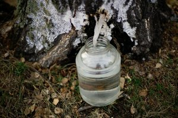
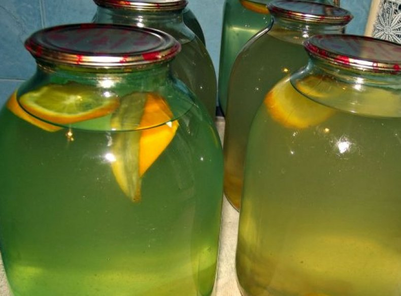

Что такое березовый сок .


Березовый сок (березовица) представляет собой бесцветную, прозрачную жидкость с характерным ароматом, собранную из поврежденных стволов и ветвей березовых деревьев во время весеннего сокодвижения. Еще со времен Киевской Руси он хорошо известен как вкусный, тонизирующий, освежающий напиток, обладающий лечебными свойствами. В старину из него делали квас, медовуху, вино и другие целебные и бодрящие напитки. Некоторые традиционные рецепты сохранились до наших дней. Ценность березового сока состоит в оказании благотворного воздействия на организм человека. Его регулярное употребление помогает избавиться от авитаминоза, очистить от слизи бронхи и легкие, вывести шлаки и солевые отложения в печени и почках, повысить иммунные свойства, улучшить обменные процессы.
Березовый сок отличается очень разнообразным и богатым составом. В нем находятся десять наиболее ценных для живых организмов аминокислот, витамины группы В, множество минералов (в т. ч. калий, кальций, магний), фитонциды, полисахариды, ферменты, растительные гормоны, дубильные и другие биологически активные вещества. Этот напиток обладает очищающим, мочегонным, противовоспалительным, противоинфекционным, антиаллергическим, регенерирующим действием. Березовый сок улучшает состояние сердечно-сосудистой системы, показан при язвенной болезни, заболеваниях печени и почек, бронхолегочных воспалительных процессах, ревматизме, подагре, артрите и радикулите. Не менее широко известны его диетические (калорийность 1 л сока составляет 24 ккал) и косметологические (освежает и улучшает состояние кожи, волос, заживляет раны, убирает пигментацию, сглаживает рубцы и пр.) свойства.
Польза березового сока несомненна, но все же в случае мочекаменной болезни следует соблюдать осторожность, чтобы не спровоцировать высокую активность солевых образований, способных вызвать сильные болевые ощущения. Также березовый сок противопоказан в случае положительной аллергической реакции на пыльцу березы.
Сбор целебной жидкости начинают весной, когда сойдет снег и немного прогреется почва. Сокодвижение у берез происходит в период набухания почек, приблизительно за месяц до появления молодых клейких листочков и цветения, и продолжается в течение 15 – 20 дней. В случае внезапных морозов или существенного похолодания, движение жидкости в растении может приостановиться на некоторое время, а с потеплением – возобновиться. Еще следует учитывать, что первыми «плачут» березы, растущие на более теплых, солнечных участках. Наиболее интенсивное сокодвижение происходит днем, в период с 10:00 и приблизительно до 18:00. В утреннее, вечернее и ночное время сокодвижение если и происходит, то совсем незначительно.
На качество сока, а в результате и на наше здоровье, большое влияние оказывает место расположения деревьев, из которых берется целебная жидкость. Если они растут в загрязненной химическими веществами местности (вблизи промышленных предприятий, складских помещений, хранящих пестициды и другие токсичные продукты, рядом с обрабатываемыми химическими препаратами посевными площадями, территориями захоронения бытовых или промышленных отходов, на обочинах автомобильных дорог и пр.), то сок может содержать соли тяжелых металлов и другие опасные для человека вещества. Поэтому лучше всего собирать сок из тех деревьев, которые растут в экологически чистой зоне.
Второй важный момент – деревья, которые используются в качестве доноров сока, должны быть достаточно взрослыми и крепкими. Если диаметр ствола березы не достиг 20 см, то механическое повреждение его и отбор у дерева небольшого количества сока может причинить растению непоправимый вред. Наиболее подходят для сбора сока березы, диаметр ствола которых превышает 25 – 30 см. Существует несколько различных технологий добычи березового сока, но все они основываются на образовании с южной стороны ствола в коре и древесине дерева (путем их разрезания, просверливания или прорубывания на высоте приблизительно 0,4 – 0,5 м от земли) наклонного (под углом 30 – 45°) отверстия глубиной 3 – 4 см и диаметром не более 1 – 1,7 см. В отверстии устанавливается (с уклоном вниз) желобок или трубочка, по которой жидкость будет стекать в посуду. Чуть ниже отверстия к стволу прикрепляют емкость для сбора сока. Чтобы избежать потерь ценного продукта, бересту под отверстием с трубочкой подрезают в форме уголка с направленной вниз вершиной, откуда образующиеся капли сока будут попадать прямо в посуду.
Для сбора березового сока часто используют трубочки от медицинской капельницы (5 или 7 мм). В этом случае на трубке с одной стороны следует сделать косой срез и аккуратно, слегка наклоняя в разные стороны, ввести в просверленное отверстие. Другой конец помещается в емкость. За сутки с одного отверстия можно получить до 1 л сока. Очень важно соблюдать умеренность при отборе жидкости, чтобы деревья после такой операции могли полноценно восстановиться и окрепнуть к следующему сезону. Отверстие после удаления трубочки обязательно закрывают сухой веткой подходящего диаметра, а сверху прикрывают мхом или замазывают садовым варом (хозяйственным мылом, воском), чтобы не допустить попадания в рану инфекций.
Существует также более щадящий способ сбора березового сока, который не требует повреждения ствола, а предусматривает срез одной или нескольких нижних боковых веток толщиной около 1 – 2 см, ответвляющихся от основных. На них подвешивают емкости (как вариант: крепко подвязывают пакеты из плотного полиэтилена), где постепенно будет накапливаться сок. Для безопасности дерева срезы веток после завершения процедуры необходимо также замазать и закрыть, не допуская попадания в раны болезнетворных бактерий.
Собранный сок не может долго храниться в свежем виде, поэтому его необходимо подвергнуть переработке. Зачастую продукт консервируют при температуре +80°С, добавив в него сахар (100 г/1 л) и лимонную кислоту (на кончике ножа). Очень популярен квас, приготовленный на основе березового сока. Для этого в сок добавляют жареные зерна ячменя, сухофрукты (яблоки, груши, изюм), немного сахара для брожения (2 чайные ложки/1 л), иногда для ароматизации используют лимонные корки. Емкость плотно закрывают и оставляют в темном, прохладном помещении. Заморозка – еще один способ хранения сока, позволяющий сберечь все находящиеся в нем ценные вещества.